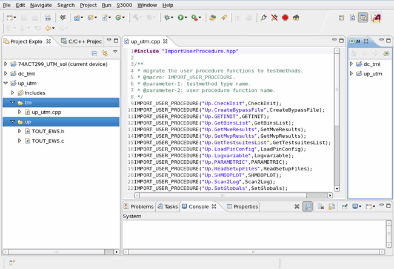

How to convert a user procedure to a UTM project
Before you begin
Make sure the original user procedure is valid and can be compiled and executed successfully.
Make sure you are using SmarTest 6.5.2 or later.
Procedure
$/$HP83000_ROOT/prod_pws/migration/UTM_conversion/bin/convertUP [-f up_makefile_name] [-l log_file_name] [-u function1[,function2,...,functionN]] <path_of_user_procedure> <path_of_testmethod_project> <name_of_testmethod_project>
[-f up_makefile]: The makefile name used by user procedure compilation without path information.
[-l log_file_name]: Logfile name, optional, default
is to output the log to stdout.
[-u function1[,function2,...,functionN]]: The list of the user procedure functions. Use commas to separate the functions. If not specified, all functions in the user procedure will be converted.
< path_of_user_procedure>: The user procedure directory where all functions are located.
< path_of_testmethod_project>: The directory for the converted UTM project. It must be valid and outside of Eclipse CDT project directories and device project directories.
< name_of_testmethod_project>: The name for the converted UTM
project. It must be a valid name consisting of 'a-z', 'A-Z',
'0-9' or '_'.
Results
If the conversion is successfully completed, you will find the universal test method project in the target directory. In the UTM directory, there are two sub-directories tm, containing the UTM source file, and up containing the user procedure files.
Example
In the following example, the user procedure file TOU_EWS.c in the directory /home/demo/EWS_REV09 is converted to a UTM project. The makefie used is Makefile.LINUX.
Enter the following command in the command line:
$/$HP83000_ROOT/prod_pws/migration/UTM_conversion/bin/convertUP -f Makefile.LINUX
/home/demo/EWS_REV09 /home/demo/TMprojects up_utmIf no error occurs, this will create the file up_utm.cpp in the tm sub-directory and copy TOU_EWS.c and header files in the up sub-directory of the directory /home/demo/TMprojects/up_utm. The following figure shows the directory structure and content of up_utm.cpp.

What to do next
To use the converted universal test method project, you need to import the project into the SmarTest Work Center, build the project and modify the file if any error occurs.
Functional changes
- Introduced in SmarTest 6.5.2
- SmarTest 7.1.0: The location of the conversion tool is changed.